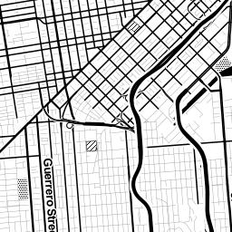

Mapbox! A presentation for GEOG 491/591, Spring 2015
Who here has heard of Mapbox before?
Awesome!
At Mapbox, we make developer tools for making custom web maps.
"Custom" means more than just custom data on a map.
It means custom as in style...
... and custom as in interaction.
There are many tools out there for making maps. With some of them, it's very clear what all they can do.
Mapbox is not that company. We do a ton of things!
We have a few main tools you can use to make smart, beautiful maps. Let's talk about them.
Studio comes pre-loaded with a ton of vector data from OpenStreetMap and Natural Earth.
OpenStreetMap is an
open and
editable map of the world. (Think of it as the
Wikipedia of maps.)
Natural Earth is a dataset co-created by
Nathaniel Kelso from Apple and
Tom Patterson from the National Park Service.
You can style this data using a language called CartoCSS (which is very similar to CSS).
You can also add your own vector data to style.
Then, you can upload your styles and sources to your Mapbox account to use in your maps.
Once on the Mapbox servers, your data becomes vector tiles. This is awesome and innovative and fast!
With vector tiles, your vector data and style are stored separately, and the vector data maintains its attributes.
That way you can apply multiple styles to the same data, and the files are smaller. This means your maps load quicker!
But I digress. Here's a puppy.
So let's say you make a custom map style with Mapbox Studio. Then what?
With Mapbox Editor you can also upload data to add to your map, or draw your own data.
These Projects are then saved to your account and given a map ID.
(Editor also gives you a share link and an embed code.)
But let's say you want more. Let's say you want custom tooltips or custom markers or a list of features.
Oh! and we have these handy dandy
guides!
Okay. So you made a custom style with Mapbox Studio. You added some data with Mapbox Editor. You added more interaction with Mapbox.js.
What about analysis? Or ooh, what if we add some directions to our map? Maybe geocoding?
Check, check, check.
Turf.js is a JavaScript library for
spatial analysis.
But before we can really play with these tools, we should understand some of the fundamentals.
Let's talk about how web maps work.
These slides come from
several presentations created by
Maptime chapters.
Maptime groups are hands-on, beginner-focused meetup groups for learning about web mapping and geospatial concepts and tools.
(This is
up your alley.
Check it out -- maybe you can start a chapter in
Eugene!)
In 1996, Mapquest launched its web service.
Directions for driving! Online! Wow!
The problem: it was slow to load :(.
MapQuest required a full page refresh to scroll or zoom, and was always aligned to tile boundaries.
Then, in 2005, came Google Maps. This revolutionized everything.
But what was the revolution?
Was it the interface?
The red marker?
The weather widget?
No!
It was the tile. 
Map tiles are 256x256 pixel images that represent little pieces of the map.
All these little tiles load way faster than one big map.
This kind of map is colloquially called a slippy map.
You just grab the ones you need to fit your screen plus a few extra along the top, bottom, left, and right.
On a web map, we don't have scales. We have zoom levels.
Each zoom level has its own set of tiles!
Zoom level 0: one tile for the world.
With each additional zoom level, the number of tiles increases exponentially.
Zoom level 1: 4 tiles for the world.
Zoom level 2, 3, 4, 5
Zoom level 13
Each map tile has a unique address!
These URLs are constructed the same way:
http://tile.openstreetmap.org/4/2/6.png -- this is the name of the tile server.
http://tile.openstreetmap.org/4/2/6.png -- this is the z value, or the zoom level.
http://tile.openstreetmap.org/4/2/6.png -- This is the x/y value, or the place in the grid for that zoom where the tile lives.
Up until
super recently, these tiles were
rendered (with a tool called
Mapnik) and
saved as PNGs.
We can call those "raster tiles".
A couple years ago, Mapbox released a specification for a new way to draw maps:
the vector tile.
Vector tiles separate the
style from the
source of the tile.
Instead of rendering and storing the tile as a PNG file, the data is stored in two pieces:
source and style.
Sources are stored as protocol buffers -- very compact pieces of data.
The .pbf has information on all the vector data that makes up that tile.
Styles are saved as JSON (JavaScript object) files.
The slippy map requests the vector tiles the same way as it would request the raster tiles...
... but the style JSON is combined the with the .pbf file when the tiles are requestedand a PNG is served to the browser.
This is like, way more efficient than the old way.
Tiled maps almost always rely on Web Mercator.
That's nice because interoperability, which is an important concept in how the web should work.
It means whatever the map,
whatever the zoom, a tile will have the
same boundaries.
Mercator projection means that latitude and longitude lines make perfect right angles...
... and Web Mercator means that these right angles form perfect squares...
... which has kinda worked for people for a long time.
Maybe too long.
If you're a geographer you know that transforming the globe from an oblate spheroid to a flat map distorts the area of continents dramatically...
...and much ink has been spilled over decades about the
perceptual implications of using
Mercator as your default projection.
ANYWAY!
That's how tiles work.
What about feature layers, the vector data we interact with on maps?
There are a few different formats for adding interactive data to maps.
But the most
popular by far is
GeoJSON.
As mentioned,
GeoJSON is an extension of a format called
JSON, which stands for
JavaScript Object Notation.
Because GeoJSON is basically just JavaScript, it can easily be used in web maps!
Some data types do well on the web, and some do not.
GeoJSON does well. Shapefiles do not.
There are
many tools for converting from
Shapefile to
GeoJSON: check out
geojson.io.
Now we know that GeoJSON is just JavaScript, which means that web mapping libraries are like, way stoked on that.
What is a mapping library? What does it do?
We learned about tiles before. And we learned about slippy maps and feature layers.
Our tiles and data need to live somewhere on the web page. They need to know when to load and they need to react when you scroll or drag.
JavaScript libraries allow us to do just that. They take care of that for us.
We can talk about this more if you stick around for the next hour!
At this point I'm probably over time.
But I'll end with this: I understand that it's not super easy to just jump in to doing something new.
Maps are hard. Programming is hard.
If you ever have ANY questions, do not hesitate to reach out.
I'm at lyzi@mapbox.com.
And I have totally sweet coupons for you!
Remember:
Thanks!
If you can swing it, stick around and we'll talk some more.
I'm
Lyzi Diamond. Twitter:
@lyzidiamond. Email:
lyzi@mapbox.com.